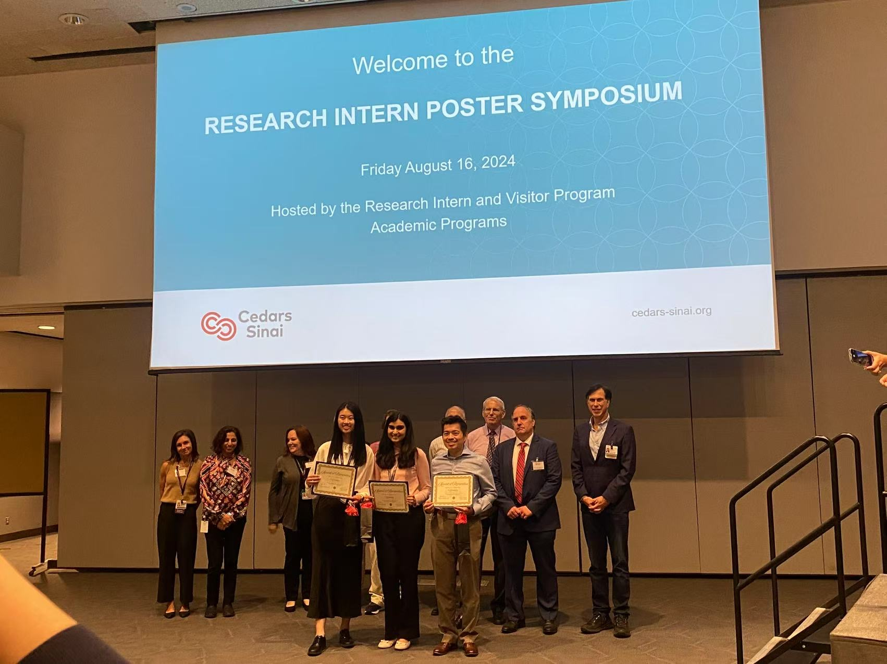
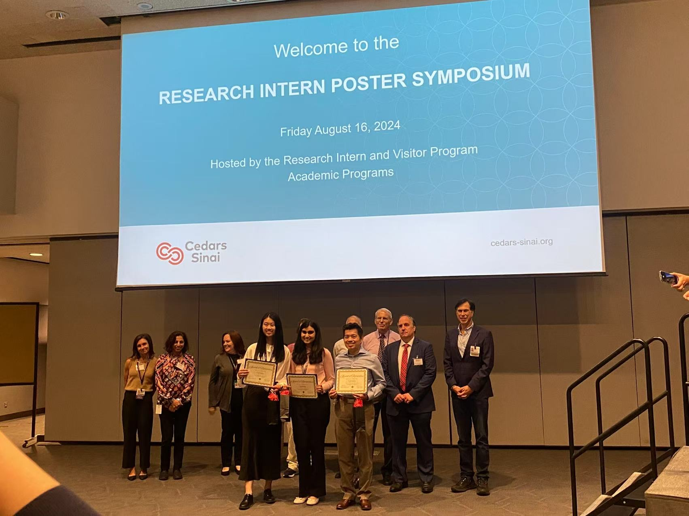
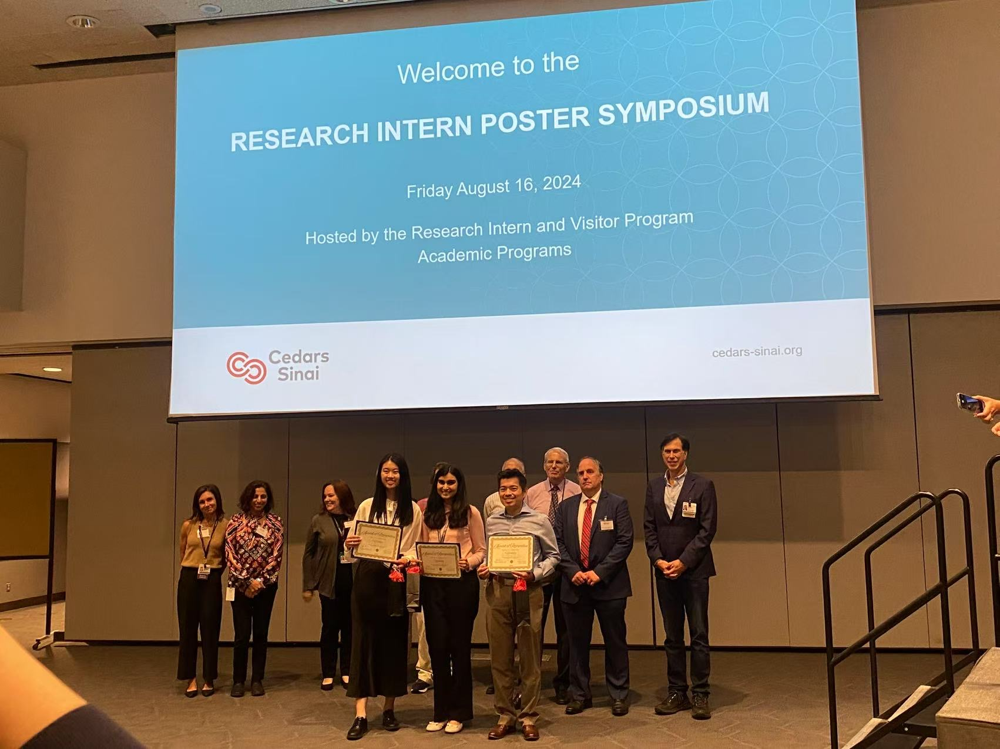
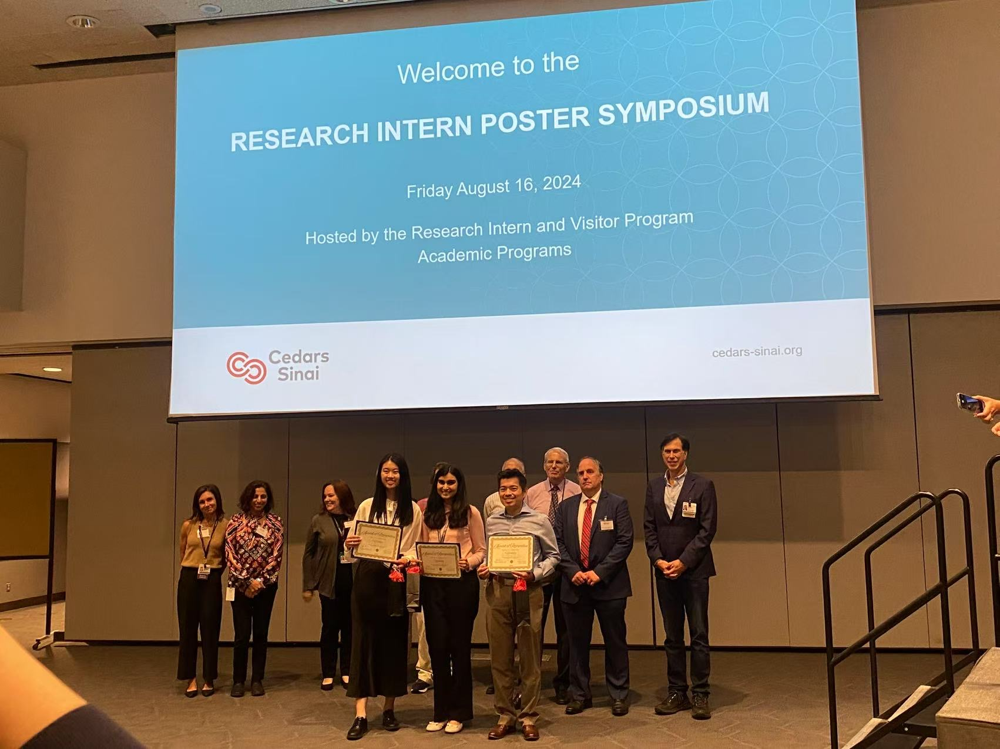

Research
 



 

2024 - Present
- At Dr. Li’s lab, I am currently working on bias mitigation in disease prediction using genetic information and Electronic Health Records.
Summer 2024
- Here, I presented my contribution to a research project named AB-PRS during my summer internship at Cedars-Sinai
Summer 2024
- I worked on creating the AB-PRS package (to be published) with various interactive, standardizable, and beginner-friendly functions. I have also created a tutorial associated with the package
2021 - 2022
Analyze single nucleotide polymorphisms and other types of genetic variations by studying k-mers using various computational tools, including pandas, numpy, and UMAP in UNIX.
With many family members being researchers, I have had contact with the idea of research early on, visiting my father’s lab during the summer to learn about materials science research. During the winter quarter of my freshman year, I joined Dr. Matteo Pellegrini’s lab to work on dog genomic research on dog breed prediction. Then, I joined a summer internship with Dr. Ruowang Li’s lab at Cedars-Sinai, working on human genomic disease prediction. The internship really made me realize that I enjoy research’s versatility, impact, and bridging gaps between computer science and biomedicine. Therefore, I continued working as a research assistant with Dr. Li. My current research focuses on bias mitigation in disease prediction models.
My cultural background made me fall in love with this interdisciplinary field. I really liked working with computers after taking my first programming course in Grade 7. Then, during covid, I started getting interested in biology, creating educational videos relating to biology. In Grade 10 during that period, my computer science teacher introduced us to Rosetta, a distributed computing program that gets computing resources from local participants to help with finding the right protein structure for COVID-19 vaccines. At that time, I participated in it using my out-dated computer that probably didn’t use much help, but I was so intrigued in the concept of solving medical problems using computers.